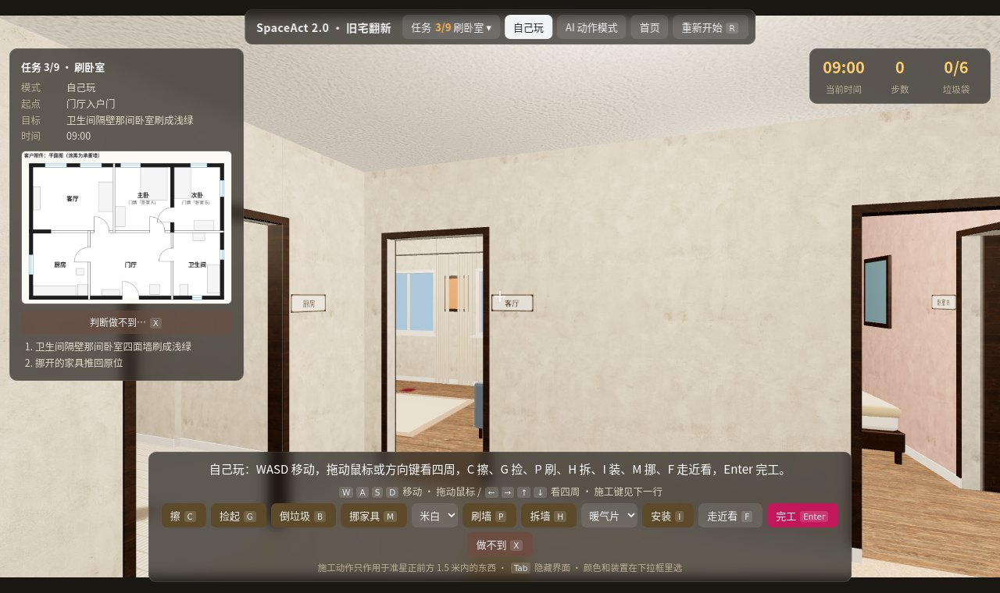
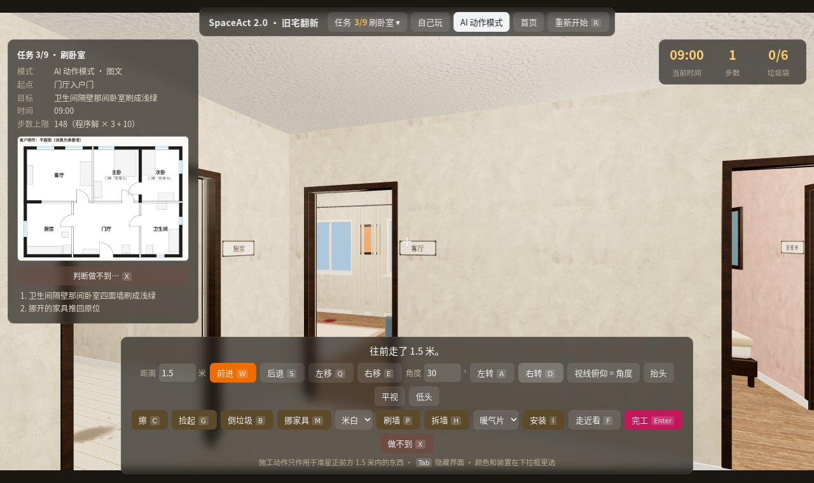
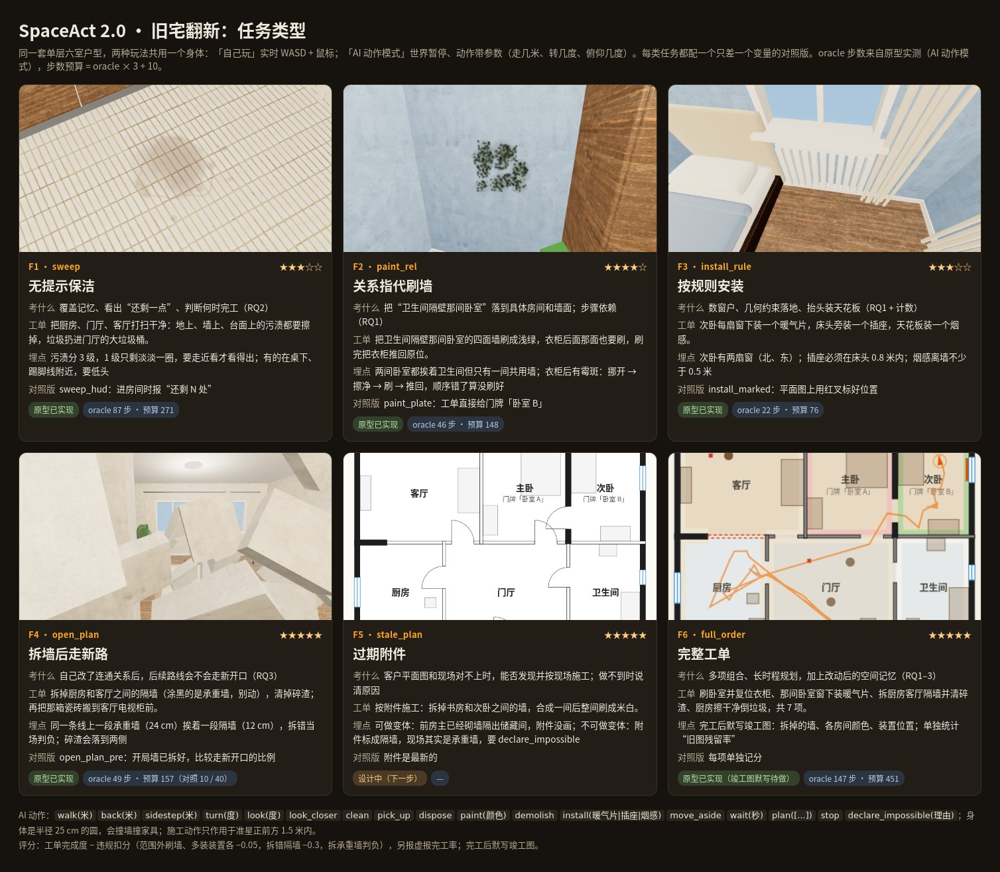
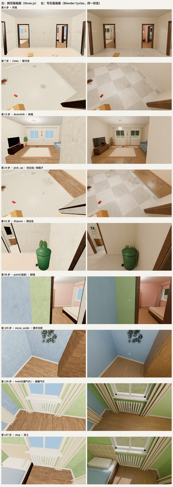
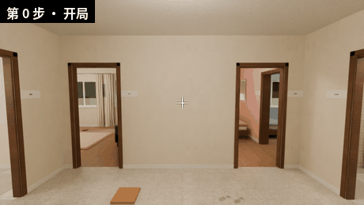
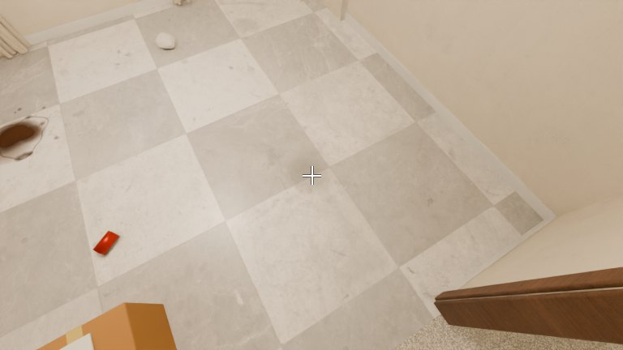
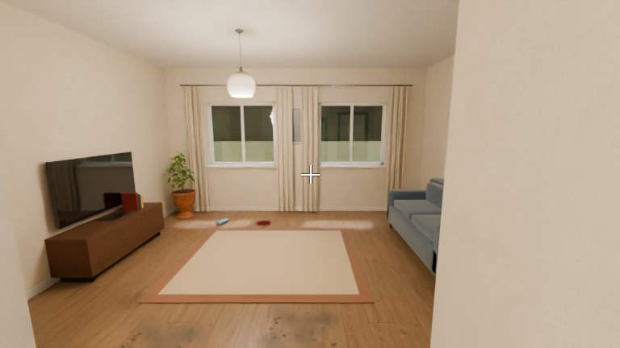
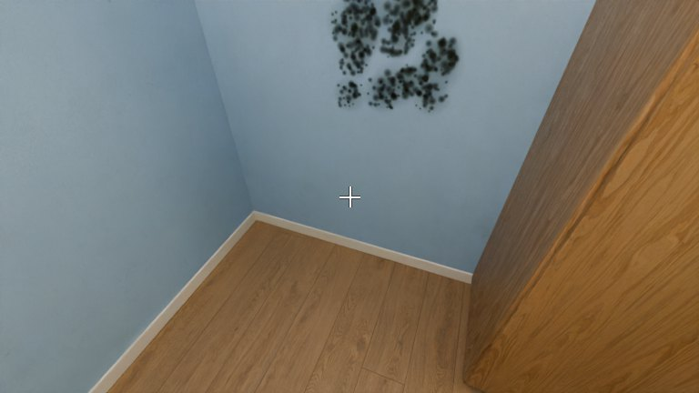
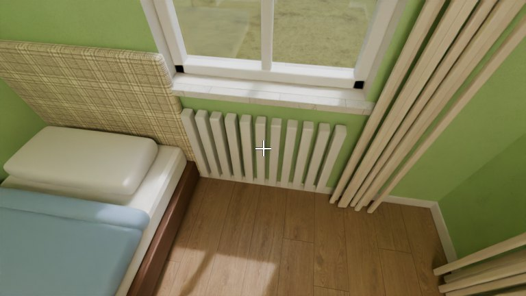

两种玩法，一个身体
照冲关模式的结构：人和模型用同一个身体模型（半径 25 cm 的圆，会和墙、家具、盆栽相撞）、同一个准星、同一套施工规则和评分。区别只在时间怎么走。

自己玩 · 人
实时操作：W A S D 移动（贴墙能滑过去），拖动鼠标或方向键看四周；准星对准以后按键施工：C 擦、G 捡、B 倒垃圾、P 刷、H 拆、I 装、M 挪家具、F 走近看，Enter 宣布完工。
挑战模式每局重新随机（见下文），结算后才能看上帝视角；完成纪录存在本机浏览器里，首页会显示“已完成 x/9”。
写实画面：页面由 bench/playtest_server.py --photoreal 托管时，顶栏会出现「写实画面」开关。走动时是实时画面（Cycles 烘焙的光照），一停下来，服务器就用 Cycles 渲染当前这一眼（约 4 秒），淡入盖在实时画面上；AI 动作模式下每步都会换成写实帧，和写实版评测里模型看到的一样。

AI 动作模式 · 模型（人也能试）
世界在思考时暂停，每个动作按它耗的时间推进游戏时钟（走路 1.25 米/秒，转身 120°/秒，擦一遍 20 秒，刷一面墙 3 分钟）。动作带参数：
walk(米) back(米) sidestep(米) turn(度) look(俯仰) wait(秒) plan([...])，
加上 clean pick_up put_down dispose paint(颜色) demolish install(件) move_aside look_closer stop declare_impossible give_up。
每步只给一张第一视角画面和一句动作结果；步数上限 = 程序解步数 × 3 + 10。
五类工单 · 每类带一个对照
对照版只改一个变量（加提示、换成门牌、标好位置、墙已拆好），成绩差就是那个变量的作用。完整工单把前四类串在一起，顺序要自己排。

AI 评测环境
开发时用 Python 的 WebEnv 直接驱动网页；正式评测用 HTTP 评测服务，模型只能通过它看到画面和文字。两种方式底下是同一个网页、同一套规则。
make_seed_bank.py --scene renovate 逐个种子跑 9 个任务的程序解，全部在步数上限内做完才收进种子库：公开 dev 每个任务 10 个（种子 1–10），私有 test 每个任务 40 个，种子号永不外传。?eval=1）只暴露 reset / step；每步观测是一张带准星的第一视角画面、一句动作结果和步数；开局另给客户附件平面图（涂黑的是承重墙）。种子、坐标、逐步评分只写进服务端审计日志。false_done：没做完就宣布完工。--photoreal，模型看到的就换成 Blender Cycles 按同一状态渲染的画面（扫描材质、HDRI 天空、窗户光照门户），规则和评分不变，可以比较同一个模型在两种画面下的成绩。约 4 秒一帧。bench/playtest_server.py 收集，直接和模型轨迹对比。正式评测：HTTP 评测服务
# 1. 生成种子库（只需一次，test 部分保密）
python3 bench/make_seed_bank.py --scene renovate --dev 10 --test 40
# 2. 启动评测服务（冲关和旧宅翻新共用）
python3 bench/eval_server.py --port 8791 --token SECRET [--photoreal]
# 3. 模型一侧只用这几个接口
POST /v1/episodes {"scene": "renovate", "task": "paint_rel", "split": "test"}
-> {"episode", "card", "obs": {"frames", "text", "step", "max_steps", "task_image"}}
POST /v1/episodes/<id>/step {"action": "walk", "arg": 2.4}
-> {"obs", "done"[, "result": {"score", "items", "violations", "false_done", ...}]}
DELETE /v1/episodes/<id> # 中途结束，按放弃计分
# 示例客户端（随机策略，换成你的模型调用即可）
python3 bench/eval_client_example.py --scene renovate --task sweep --split dev开发调试：Python WebEnv
from web_env import WebEnv
env = WebEnv("renovate", "open_plan", obs_mode="vision_only",
challenge=True, seed=3) # 种子 1–10 可公开使用
obs = env.reset() # obs["image_png"], obs["task_image_png"]（平面图）
obs, done, info = env.step(("turn", 90))
obs, done, info = env.step("demolish")
info["items"], info["violations"], info["score"]
env.oracle_actions() # 程序解的下一项活（只供自检）
# 写实画面：同一状态交给常驻的 Blender 渲染
env = WebEnv("renovate", "sweep", photoreal=True)
# 评测模式：只有 reset / step，没有 oracle、没有 info 泄露
env = WebEnv("renovate", "sweep", eval_mode=True, seed=7)任务卡里给模型的东西
| 字段 | 内容 |
|---|---|
intro / items | 客户的话和逐项工单，例如“卫生间隔壁那间卧室四面墙刷成淡粉”“衣柜后面那面也要刷” |
rules / actions | 时间怎么走、准星和 1.5 米施工距离的规则；18 种动作及参数说明 |
colors / fixtures | 可用的漆色（米白、浅灰、浅绿、天蓝、淡粉、赭石、深蓝、白色）和可装的件（暖气片、插座、烟感） |
maxSteps | 这一局的步数上限（程序解 × 3 + 10），用完判失败 |
task_image（开局观测） | 客户附件平面图：房间名、门、窗，承重墙涂黑；对照版“标好位置”会在图上标出暖气片、插座、烟感的位置 |
写实版画面
同一个状态，左边是网页版（three.js），右边是 Blender Cycles 渲染：墙面颜色、拆掉的墙、污渍当前的深浅、挪开的家具、装上的暖气片都一样。点图看完整对照（完整工单里每种工具第一次使用后的画面）。






公平、可复现、堵住捷径
false_done。参考
评测ALFRED、TEACh、Habitat Rearrangement：家务和重排任务，但 agent 不改变房屋结构；本场景让 agent 亲手改连通性和地标
文件web/renovate.html · web/renovate.js（规则、程序解、AI 接口、种子随机）· renovate/layout.py（唯一的布局数据）· blender/renovate_photoreal.py · bench/photoreal.py · bench/eval_server.py · bench/make_seed_bank.py · bench/web_env.py